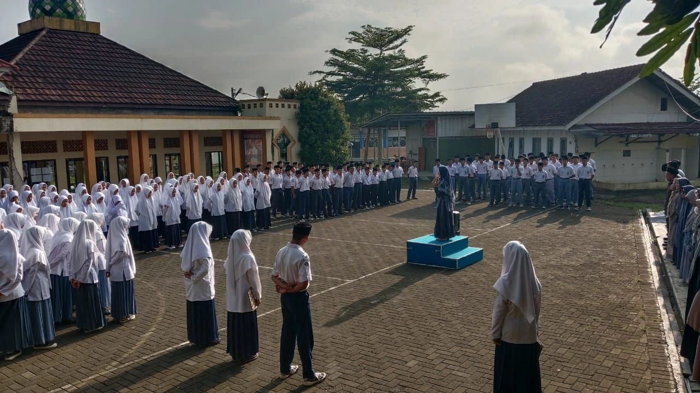

Galeri

Sekolah Unggul dalam Pembinaan & Karakter
Nama “At-Tajdid” terinspirasi dari salah satu istilah gerakan di Muhammadiyah, pembaharuan, pemurnian dan pengembalian pemikiran manusia kepada Islam yang sebenar-benarnya. At-Tajdid didirikan oleh Pimpinan Cabang Muhammadiyah (PCM) Singaparna Kabupaten Tasikmalaya, gagasan bermula sejak tahun 1994. Ketua PCM Singaparna Periode 1991-1995, Bapak H. Oyon Sumaryono merasa tergugah dengan amanat Muktamar Muhammadiyah di B anda Aceh. Gagasan ini mendapat d ukungan dari Pimpinan Cabang Aisy iyah (PCA) Singaparna, dengan sem angat “Nashrun Minallahi Wa Fathu n Qariib”, PCM dan PCA Singaparna mewujudkan cita-citanya mendirikan Pesantren yang modern.
Akhirnya, pada tahun 1999 bertepatan dengan berubahnya era Orde Baru ke Reformasi, berdirilah Pesantren At-Tajdid. Tanah wakaf dari Rd. Wiradimadja menjadi tempat berdirinya sarana dan prasarana Pesantren, At-Tajdid memiliki sekolah formal tingkat SMP dan SMA. Pesantren menginduk ke Kemenag sedangka n Sekolahnya menginduk ke Dinas Pendidikan, seiring bertambahnya santri pengelolaan At-Tajdid akhirnya berpindah tangan dari Pimpinan Cabang Muhammadiyah Singaparna kepada Pimpinan Daerah Muhammadiyah Kabupaten Tasikmalaya, Pesantren At -Tajdid memiliki visi “Mencetak Genera si Unggul Yang Berkarakter Ulul Albab” . Bertujuan untuk menciptakan kader Mu hammadiyah yang bermanfaat dan berjiw a pengabdian bagi Umat, Bangsa dan Ne gara. Hingga saat ini At-Tajdid telah melahirkan 20 angkatan yang tersebar di berbagai Perguruan Tinggi Muhamm adiyah, Perguruan Tinggi Negeri, Pe rguruan Tinggi Swasta dan Luar Nege ri serta ada pula yang sudah berkhi dmad di Masyarakat, Persyarikatan d an Pemerintahan
Program Dakwah mempersiapkan santri untuk menjadi da’i yang inspiratif, membekali mereka dengan keterampilan berbicara dan menyampaikan pesan-pesan Islam secara efektif dan menarik, serta memupuk semangat untuk menyebarkan nilai -nilai kebaikan di Masyarakat.
Dalam program bahasa, santri diajarkan Bahasa Arab dan Bahasa Inggris dengan pendekatan komunikatif, memungkinkan mereka untuk memahami dan berinteraksi dengan dunia Internasional serta memperdalam ilmu Agama melalui teks-teks asli.
Program Life Skill di Pesantren At-Tajdid Muhammadiyah Tasikmalaya mengajarkan santri keterampilan praktis yang relevan, mulai dari kepemimpinan hingga teknik pertanian modern. Dengan ini, santri tidak hanya menghadapi tant angan akademis, tetapi juga siap berkon tribusi secara langsung dalam kehidupan Masyarakat.

📍 Padakembang, Tasikmalaya, Jawa Barat, Indonesia.
📧 faizkaryadi@email.com